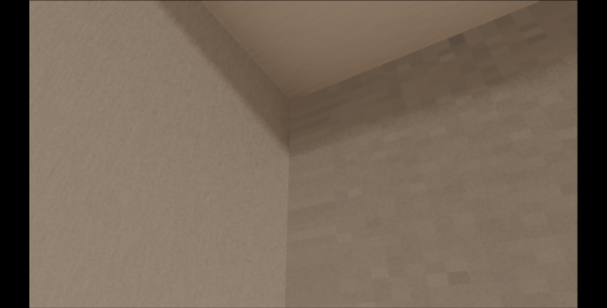
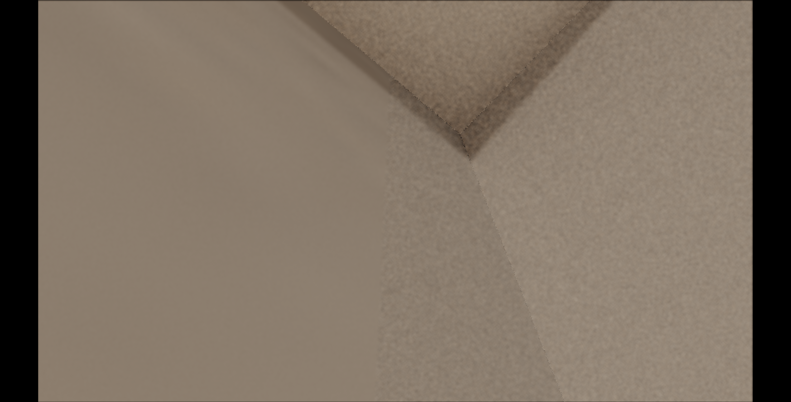

R7-3.10 ROI1 修補後馬賽克回歸與柱面消失回報
1. 回報範圍
本頁整理使用者在 CODEX 套用 ROI 1 D1B z gate 修補後，於 Home_Studio.html 看到的新回歸現象。這份只作為下一輪 debug 起點，暫不下正式修法結論。
前一輪 CODEX 改動重點：
uR7310C1WestWallBeamShadowZMaxOverride = 2.7179
目的：
清掉 ROI 1 anchor grid 的 1013|1016 邊界 pair。
已知效果：
黑邊消失。
新回歸：
西牆局部馬賽克回來。
西南柱南面與北面在南牆外視角會消失。
東牆靠近東南柱子的 hybrid 區域也出現類似錯誤。2. 使用者觀察摘要
使用者確認 ROI 1 黑邊消失，但同一區域出現更大的牆面馬賽克問題。第一張圖顯示西牆與西南柱附近有橫向條狀、塊狀 hybrid artifact。使用者從南牆外面看時，西南柱的南面與北面會消失；消失後會看到西側內面上的橫條馬賽克。
第二張圖顯示東牆靠近東南柱的位置也有類似問題。使用者描述為「hybrid 到這就變成別的東西了」，表示問題可能不是單一西牆 z gate，而是牆面 / 柱子 / 樑陰影 route ownership 在南端交界處共同失配。
3. 西側回歸視角
使用者提供的西側視角：

--r7310-west-wall-mosaic-diagnostic 重現。runner package：.omc/r7-3-10-west-wall-mosaic-diagnostic/20260520-224034。{
"cameraState": {
"position": { "x": -1.824365, "y": 2.432103, "z": 2.789964 },
"yaw": 2.0948,
"pitch": 0.561,
"fov": 55,
"forward": { "x": -0.733113, "y": 0.532033, "z": 0.423659 }
},
"view": {
"facing": "西(-X)",
"config": 1,
"samples": 1,
"paused": true,
"sppCap": 1000
},
"viewport": {
"innerWidth": 1458,
"innerHeight": 741,
"canvasCssWidth": 1318,
"canvasCssHeight": 741,
"drawingBufferWidth": 1280,
"drawingBufferHeight": 720,
"devicePixelRatio": 3.5,
"aspect": 1.777778
}
}西側視覺現象：
- ROI 1 黑邊已消失。
- 西牆靠近西南柱、樑下方區域出現橫條馬賽克。
- 從南牆外側看，西南柱南面與北面會消失。
- 柱面消失後，能看到西側內面上類似橫條馬賽克的內容。
4. 東側回歸視角
使用者提供的東側視角：

--r7310-east-wall-beam-shadow-visual-test 重現。runner package：.omc/r7-3-10-east-wall-beam-shadow-live-match/20260520-224205。{
"cameraState": {
"position": { "x": 1.898765, "y": 2.454393, "z": 2.466606 },
"yaw": -2.266,
"pitch": 1.027,
"fov": 55,
"forward": { "x": 0.397315, "y": 0.855751, "z": 0.331409 }
},
"view": {
"facing": "上(+Y)",
"config": 1,
"samples": 1,
"paused": true,
"sppCap": 1000
},
"viewport": {
"innerWidth": 1458,
"innerHeight": 741,
"canvasCssWidth": 1318,
"canvasCssHeight": 741,
"drawingBufferWidth": 1280,
"drawingBufferHeight": 720,
"devicePixelRatio": 3.5,
"aspect": 1.777778
}
}東側視覺現象：
- 東牆靠近東南柱子的交界出現 hybrid artifact。
- 畫面裡局部牆面與樑 / 柱交界的材質或光照來源看起來被錯誤替換。
- 問題位置與西側同屬「牆面南端 + 柱子 + 樑陰影」交界區。
5. 目前最重要的 debug 假設
目前建議下一輪先查 route ownership，不要直接再調單一 z 值。
H1：2.7179 修掉 ROI 1 黑邊，但把原本由 west-wall-beam-shadow route 承接的南端牆面區域改派給 west-wall-full route，導致該區域吃到解析度、UV 或 atlas 區塊不連續的內容。
H2：西南柱南面 / 北面消失，可能是 geometry culling、runtime surface predicate、或南端 structural island 判定在外側視角下不穩。
H3：東牆靠東南柱也出現相似 artifact，表示 east/west 的 dedicated hybrid handoff policy 可能有對稱性問題。
H4：問題不一定只在 D1B 的 z max；也可能是牆面 full patch、beam shadow patch、column shadow patch 的優先順序在南端交界處互相覆蓋。6. 下一輪建議檢查順序
1. 先用使用者提供的兩組 cameraState 重跑 runtime probe。
目標：輸出 routeId、targetId、normal、worldPos、radiance。
2. 西側同視角做 A/B。
A = uR7310C1WestWallBeamShadowZMaxOverride 3.056
B = uR7310C1WestWallBeamShadowZMaxOverride 2.7179
目標：確認馬賽克是 D1B 造成，或原本就藏在其它 route。
3. 檢查西南柱可見面。
目標：找出南面與北面消失時，hitObject、normal、routeId 是否仍落在預期 surface。
4. 檢查東牆對稱案例。
目標：確認 eastWallBeamShadow / eastBeamUnderShadow / structural-beams-columns 的 handoff 是否也有南端 ownership 問題。
5. 暫停再用單一 z 門檻硬切。
目標：先找到哪個 route 或哪張 atlas 被錯誤套用，再決定正式修法。7. 給下一位代理的短結論
ROI 1 黑邊已被 2.7179 z gate 清掉，但使用者確認產生新回歸：
- 西牆靠西南柱出現橫條馬賽克。
- 從南牆外側看，西南柱南面與北面會消失。
- 東牆靠東南柱也出現類似 hybrid artifact。
下一輪請先以使用者提供的兩組 cameraState 做 route / target / normal / worldPos probe。
請先定位 route ownership 與 atlas handoff，再談修法。